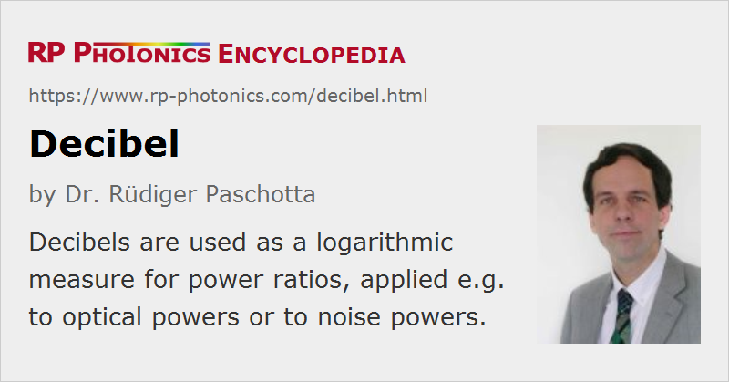

Decibel
Definition: a logarithmic measure for power ratios, applied e.g. to optical powers or to noise powers
German: Dezibel
How to cite the article; suggest additional literature
Author: Dr. Rüdiger Paschotta
The decibel (dB) is often used for quantifying the gain of an amplifier or the loss of some optical element, such as an optical fiber or an optical attenuator. The number of decibels is 10 times the logarithm (to base 10) of the power amplification factor or loss factor, or alternatively 20 times the logarithm of the amplitude ratio of the electric field strengths.
Such a logarithmic quantity is useful because e.g. the decibel gain values of several amplifiers in a sequence can simply be added to obtain the total gain of the amplifier chain.
Decibels in the Context of Optical Signals
The decibel is also often used in the context of transmitted signals (e.g., for optical filters) and of noise e.g. of lasers or amplifiers. Great care is recommended in the context of optical signals, where one is dealing with two different kinds of power:
- The optical powers are interpreted as modulation amplitudes, corresponding to the voltage or current amplitude generated by a photodetector measuring the optical power.
- The modulation power is then proportional to the square of the voltage or current amplitude, and thus also to the square of the optical power.
For example, if the peak-to-peak modulation of an optical power is increased by a factor of 10 (e.g. by amplification in a 10-dB fiber amplifier), this increases the signal power by 20 dB, not 10 dB.
Frequently Used Specifications
Some frequently used related specifications are:
- dBc = dB relative to the carrier. This is used e.g. to specify the power of a sideband in a modulated signal relative to the carrier. For example, −30 dBc means that the sideband is 30 dB below the carrier, i.e., it has a 1000 times lower power.
- dBc/Hz: This is used for noise and means dBc in a 1-Hz bandwidth.
(Of course, this does not mean that there would be twice as many dBc in a 2-Hz bandwidth, as decibels are a logarithmic measure!)
Often, such specs are calculated from measurements based on a larger bandwidth. For example, if one obtains −25 dBc in a 1-MHz bandwidth, this converts into −85 dBc in 1 Hz, i.e., −85 dBc/Hz. The 60-dB difference reflects the bandwidth reduction by a factor of 106. - dBm = dB relative to a reference power of 1 mW. This is often used to specify absolute power levels, e.g. of the saturated output power of a fiber amplifier. For example, 23 dBm correspond to 102.3 × 1 mW = 200 mW.
Questions and Comments from Users
Here you can submit questions and comments. As far as they get accepted by the author, they will appear above this paragraph together with the author’s answer. The author will decide on acceptance based on certain criteria. Essentially, the issue must be of sufficiently broad interest.
Please do not enter personal data here; we would otherwise delete it soon. (See also our privacy declaration.) If you wish to receive personal feedback or consultancy from the author, please contact him e.g. via e-mail.
By submitting the information, you give your consent to the potential publication of your inputs on our website according to our rules. (If you later retract your consent, we will delete those inputs.) As your inputs are first reviewed by the author, they may be published with some delay.
See also: dBm, gain, optical amplifiers, optical attenuators, optical power
and other articles in the category optical metrology
|  |
If you like this page, please share the link with your friends and colleagues, e.g. via social media:
These sharing buttons are implemented in a privacy-friendly way!